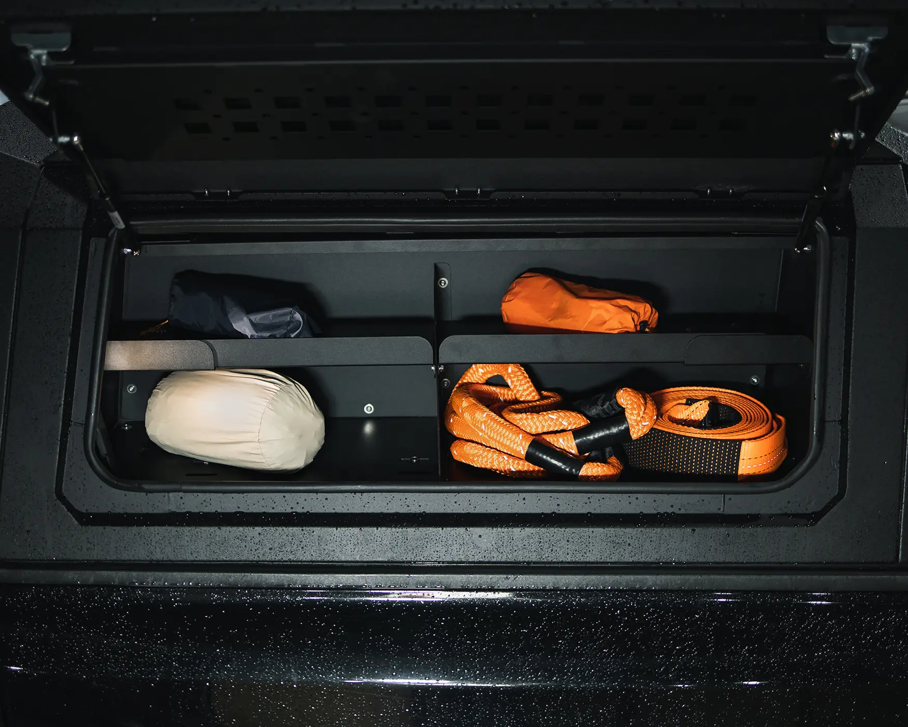
Organização
Armário modular
Compartimentos independentes para ferramentas, equipamentos e itens de expedição.
Performance Series
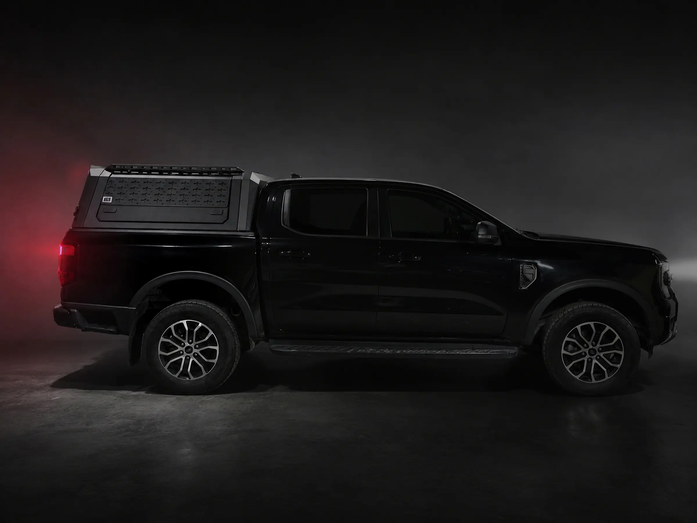
Feita para proteger. Criada para explorar.
Quero equipar minha picape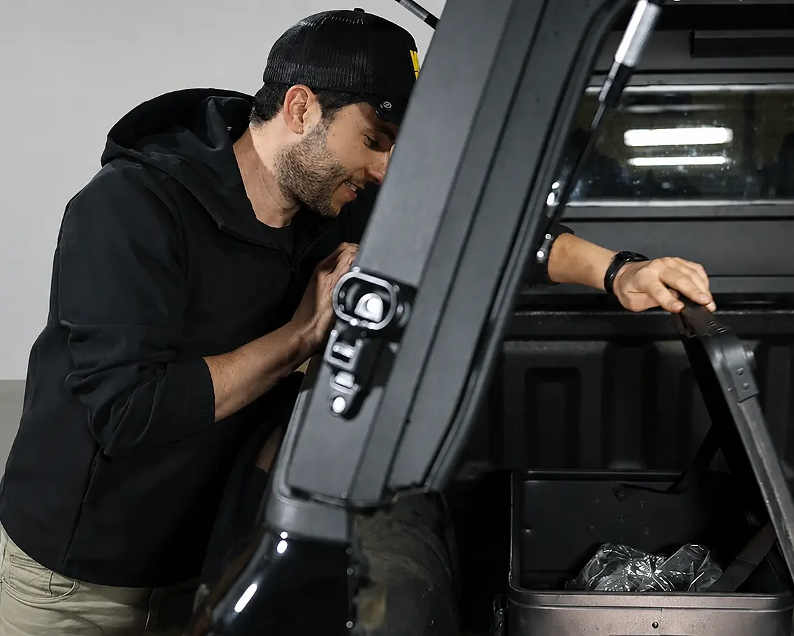
Portas laterais e traseira trazem mais praticidade no uso diário, com uma abertura ampla e estrutura firme.
Com apenas 65 kg, entrega robustez sem comprometer a performance da sua picape.
Led embutido garante mais visibilidade para encontrar seus pertences no escuro.
Com 5 mm de espessura, durabilidade garantida dos vidros com tecnologia Frits.
2 trancas com chaves por porta
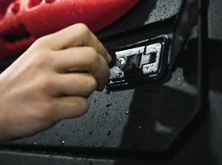
Luz de ré, freio e piscas no aerofólio
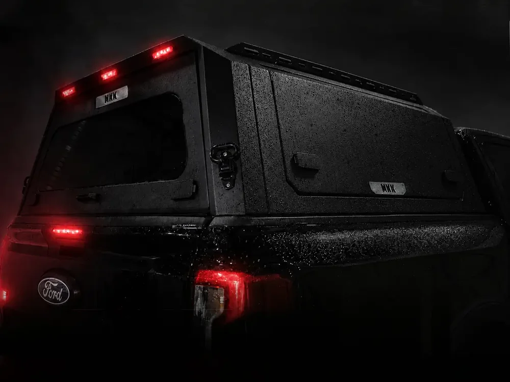
Fácil acesso ao teto, suporta até 130kg
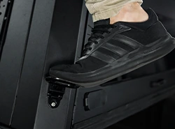
Molle panel interno nas portas laterais
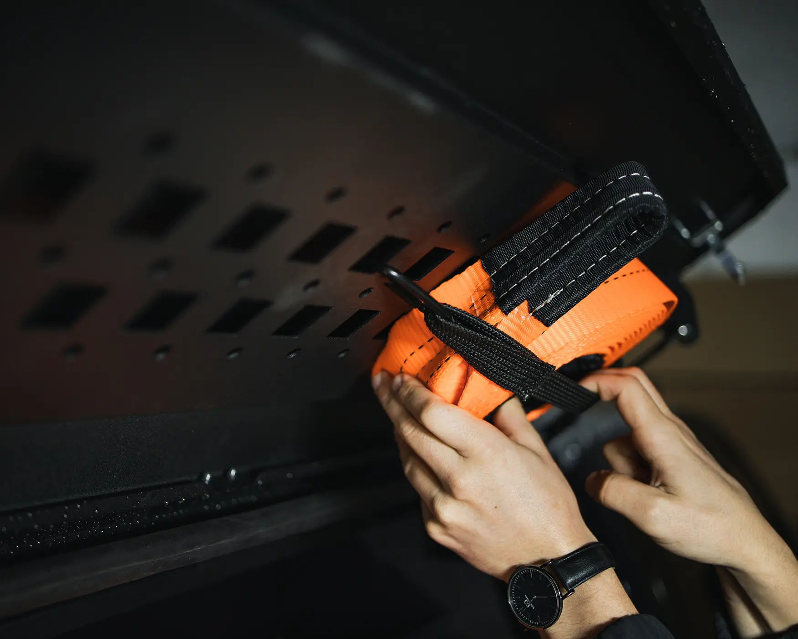
Equipado com trilhos no teto
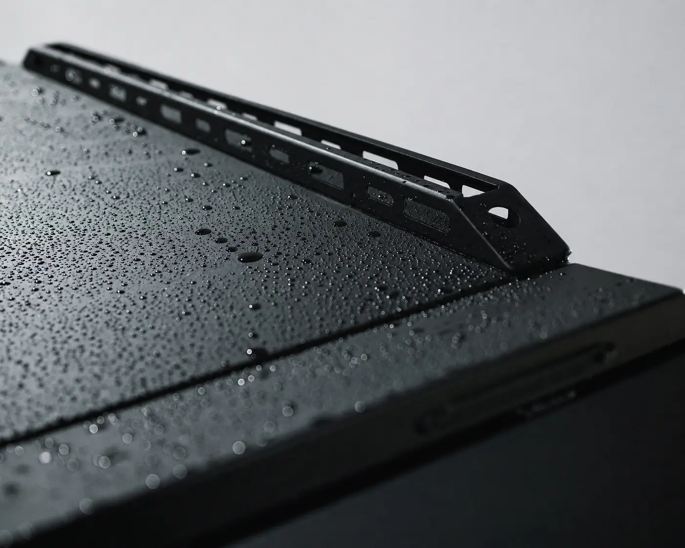
Estrutura leve e resistente
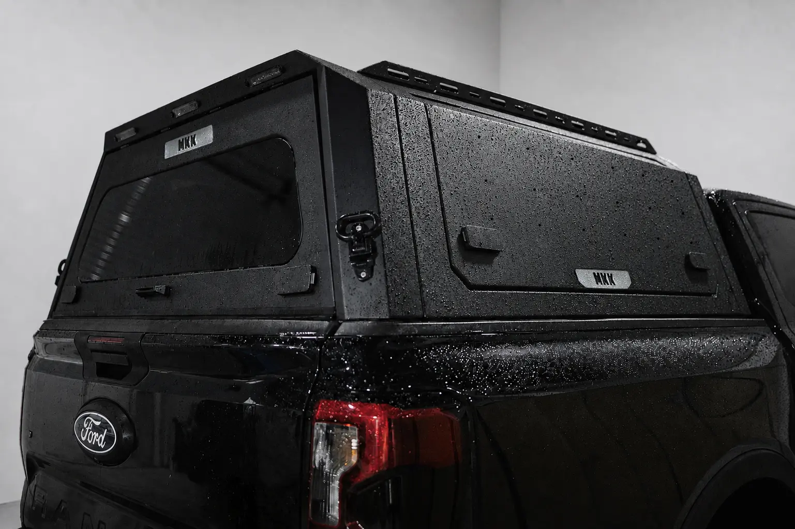
+ Tecnologia
− Poeira interna
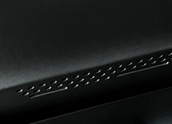
Sem furos, sem danificar seu carro
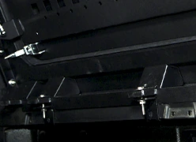
Expanda sua organização com os armários internos e Molle panel externo. Conheça os itens adicionais.

Compartimentos independentes para ferramentas, equipamentos e itens de expedição.
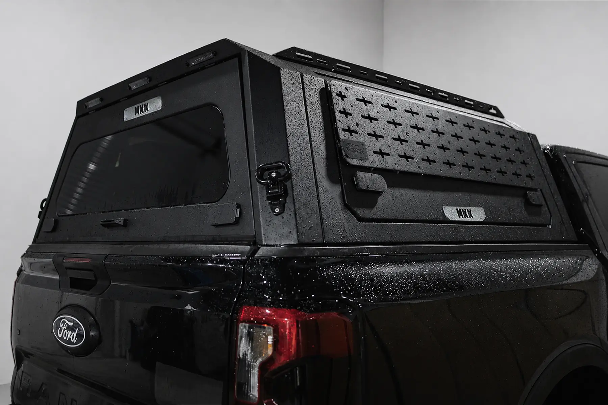
Expanda a configuração e fixe pranchas, ferramentas e acessórios do seu jeito.
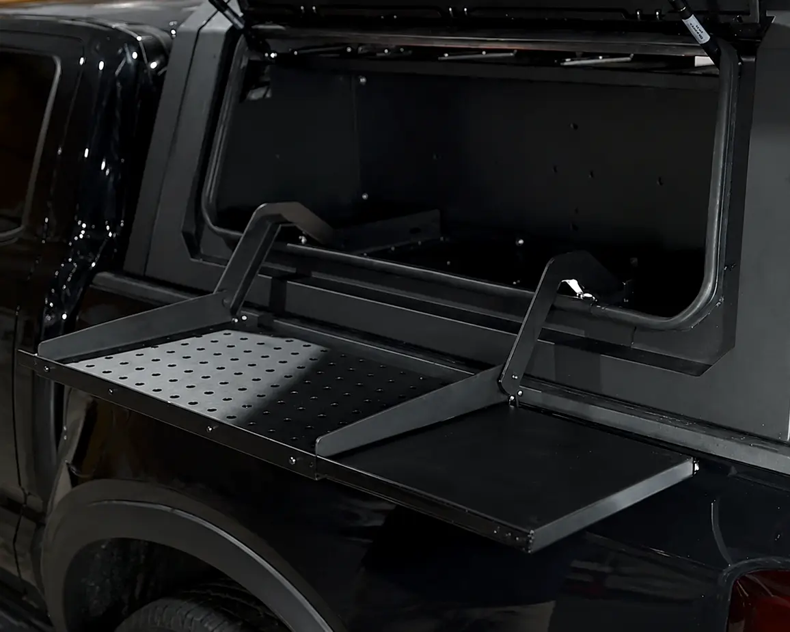
Uma bancada de trabalho com acesso aos equipamentos e melhor aproveitamento do espaço.
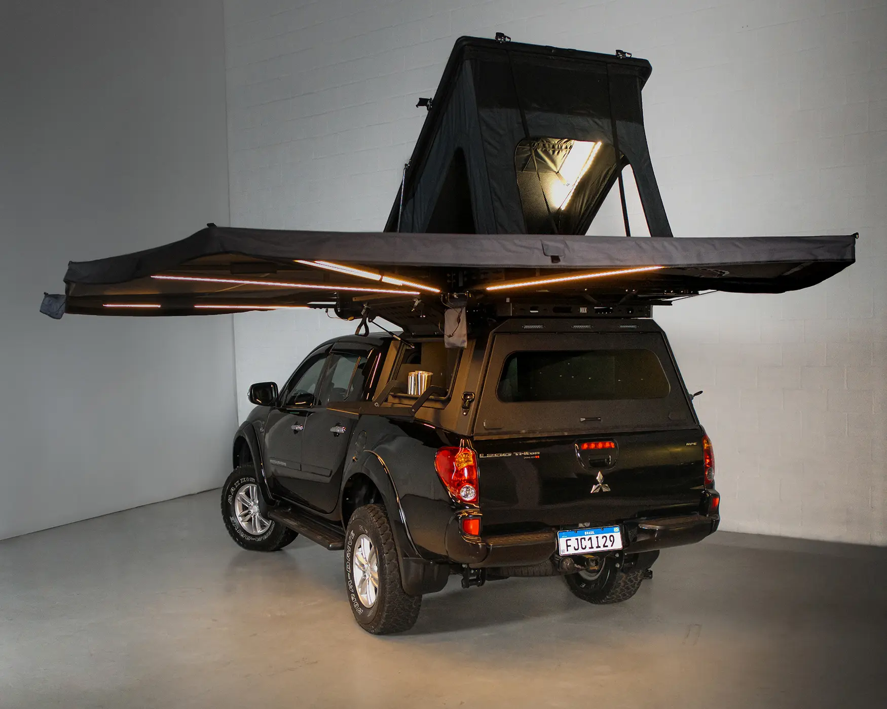
Base de acampamento com toldo, abrigo e acesso organizado.
Compatibilidade
A equipe confirma cada medida antes do pedido. Não encontrou seu carro? Fale com a equipe para avaliar uma configuração.
Solicite sua proposta
Conte como você pretende usar a Canopy Armor. A equipe MKK confirma a compatibilidade e prepara uma proposta personalizada.
Perguntas frequentes
A Canopy possui encaixes desenvolvidos para diferentes gerações de Hilux, Triton, Amarok, Frontier e Ranger. Antes do pedido, a equipe confirma o modelo e o ano exatos do veículo.
A fixação é dedicada ao modelo da picape, sem furos e pensada para preservar o veículo. A configuração final e qualquer necessidade específica são confirmadas com o especialista antes da instalação.
A Canopy já vem com o painel Molle interno nas portas laterais. Armários internos, mesa deslizante, painel Molle externo e outros acessórios são opcionais, permitindo montar a configuração ideal para seu uso.
O sistema trabalha com pressurização para ajudar a mitigar a entrada de poeira. O resultado também depende da vedação da caçamba e das condições de uso.
A estrutura e os trilhos superiores ampliam as possibilidades de configuração. A capacidade e a distribuição da carga devem ser validadas pela equipe conforme o veículo e os acessórios escolhidos.